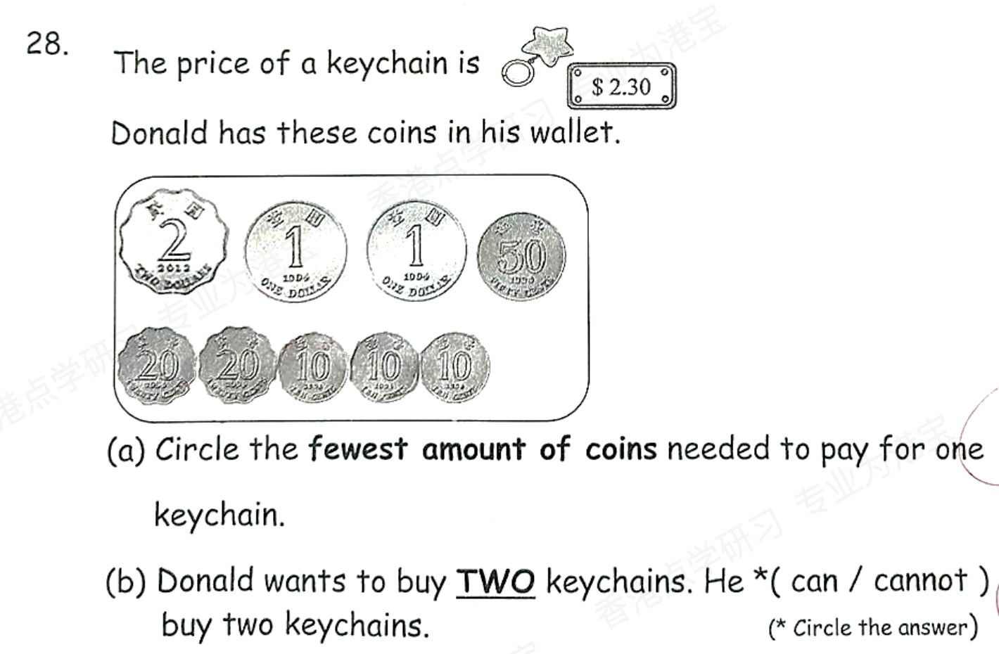
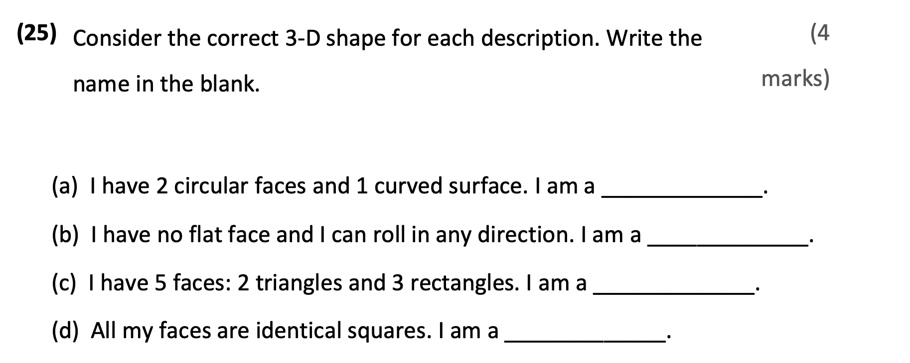
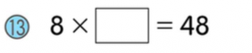

He ________ (do) housework on Saturdays.
Answer: does
Explanation: 一般现在时；第三人称单数主语动词加 s/es，复数或 I/we/they 用原形。
已掌握
| # | 单词/词组 | 中文意思 | 例句/说明 | 已掌握 |
|---|---|---|---|---|
| noun 名词 | ||||
| 1 | birthday | 生日 | My birthday is in May. | |
| 2 | chapter | 章节 | This chapter is about animals. | |
| 3 | window | 窗户 | Open the window, please. | |
| 4 | flower | 花 | This flower is red. | |
| 5 | heart | 心 | My heart beats fast. | |
| 6 | order | 顺序 | Please put them in order. | |
| 7 | clinic | 诊所 | I can use clinic in class. | |
| verb 动词 | ||||
| 8 | dig | 挖 | The dog can dig a hole. | |
| 9 | locate | 定位 | We can locate the place on the map. | |
| 10 | feel | 感觉 | I feel happy today. | |
| 11 | carry | 带有/搬运 | I carry my bag. | |
| adjective 形容词 | ||||
| 12 | hungry | 饥饿的 | I am hungry now. | |
| 13 | popular | 流行的 | I can use popular in class. | |
| 14 | favourite | 特别喜欢的 | My favourite sport is basketball. | |
| 15 | pretty | 漂亮的 | The flower is pretty. | |
| verb phrase 动词短语 | ||||
| 16 | go hiking | 去徒步 | We go hiking on Sunday. | |
| 17 | visit museum | 去博物馆 | We visit museum with our teacher. | |
| uncategorized 未分类 | ||||
| 18 | supermarket | 超市 | I can use supermarket in class. | |
| 19 | believe | 相信 | I can use believe in class. | |
| 20 | railway | 铁路 | I can use railway in class. | |
| # | 单词/词组 | 中文意思 | 例句/说明 | 已掌握 |
|---|---|---|---|---|
| adjective 形容词 | ||||
| 1 | dangerous | 危险的 | The road is dangerous. | |
| 2 | different | 不同的 | I can use different in class. | |
| noun 名词 | ||||
| 3 | word | 字数 | Please write fifty words. | |
| 4 | fin | 鱼鳍 | A fish has a fin. | |
| 5 | character | 角色；人物 | The story has many characters. | |
| 6 | shelf | 架子 | I can use shelf in class. | |
| 7 | stadium | 体育馆 | The game is in the stadium. | |
| 8 | badminton | 羽毛球 | I play badminton with my friend. | |
| 9 | moral | 道理 | The story has a moral. | |
| 10 | kind | 种类 | A dog is a kind of animal. | |
| 11 | musician | 音乐家 | The musician plays music. | |
| 12 | tutor | 家庭教师 | My tutor helps me study. | |
| 13 | chapter | 章节 | This chapter is about animals. | |
| noun phrase 名词短语 | ||||
| 14 | department store | 百货商店 | We shop at the department store. | |
| verb 动词 | ||||
| 15 | weigh | 称重 | We weigh the bag. | |
| preposition 介词 | ||||
| 16 | behind | 在后面 | The cat is behind the box. | |
| phrase 短语 | ||||
| 17 | Hong Kong Island | 香港岛 | I can use Hong Kong Island in class. | |
| 18 | ice lollies | 雪糕 | I can use ice lollies in class. | |
| noun/verb 名词/动词 | ||||
| 19 | survey | 调查 | We do a survey in class. | |
| uncategorized 未分类 | ||||
| 20 | line | 行数 | I can use line in class. | |
| 21 | assessment | 测试 | I can use assessment in class. | |
| 22 | end-year | 期末 | I can use end-year in class. | |
| 23 | corresponding | 相对应的 | I can use corresponding in class. | |
| 24 | suitable | 合适的 | I can use suitable in class. | |
| 25 | adjectives | 形容词 | I can use adjectives in class. | |
| 26 | improvement | 提升 | I can use improvement in class. | |
| 27 | thief | 小偷 | I can use thief in class. | |
| 28 | staff | 员工 | I can use staff in class. | |
| 29 | bingo | 对啦 | I can use bingo in class. | |
| 30 | knowledge | 知识 | I can use knowledge in class. | |
| # | 单词/词组 | 中文意思 | 例句/说明 | 已掌握 |
|---|---|---|---|---|
| time/date 时间日期 | ||||
| 1 | February | 二月 | February is the second month. | |
| 2 | March | 三月 | March is the third month. | |
| 3 | September | 九月 | September is the ninth month. | |
| 4 | December | 十二月 | December is the twelfth month. | |
| 5 | Thursday | 星期四 | Thursday is a weekday. | |
| 6 | Sunday | 星期日 | Sunday is a weekend day. | |
| directions 方向 | ||||
| 7 | west | 西 | The sun sets in the west. | |
| numbers 数字 | ||||
| 8 | eleven | 11 | Eleven is 11. | |
| 9 | fourteen | 14 | Fourteen is 14. | |
| 10 | seventeen | 17 | Seventeen is 17. | |
| 11 | forty | 40 | Forty is 40. | |
| 12 | hundred | 百 | One hundred is 100. | |
| ordinal numbers 序数 | ||||
| 13 | third | 第三 | This is the third shape. | |
| solid shape 立体图形 | ||||
| 14 | pentagonal pyramid | 五棱锥 | A pentagonal pyramid has pentagonal faces. | |
| 15 | sphere | 球 | A sphere is round. | |
| # | 单词/词组 | 中文意思 | 例句/说明 | 已掌握 |
|---|---|---|---|---|
| operations 运算 | ||||
| 1 | subtraction | 减法 | Subtraction means taking away. | |
| 2 | borrowing | 借位 | Borrowing helps when we subtract. | |
| geometry 几何 | ||||
| 3 | angle | 角 | An angle is made by two lines meeting. | |
| 4 | grid | 网格 | A grid helps us find positions. | |
| 5 | adjecent side | 邻边 | I can read adjecent side in a math question. | |
| 6 | adjacent side | 邻边 | These are adjacent sides. | |
| question word 题目词 | ||||
| 7 | calculate | 计算 | Calculate the answer. | |
| 8 | estimate | 估计 | Estimate the answer first. | |
| 9 | count | 数数 | Count from 1 to 10. | |
| 10 | onwards | 向前；继续向前 | Count onwards from 20. | |
| 11 | match | 匹配 | Match the number to the word. | |
| 12 | respectively | 分别地 | Tom and Ben have 2 and 3 books respectively. | |
| comparison 比较 | ||||
| 13 | more | 更多 | 8 is more than 5. | |
| 14 | fewer | 更少 | There are fewer apples in this box. | |
| position 位置 | ||||
| 15 | below | 下面 | The box is below the table. | |
| 16 | front | 前面 | The door is at the front of the room. | |
| 17 | above | 上面 | The clock is above the board. | |
| operations calculation 运算 | ||||
| 18 | mixed operations | 混合运算 | Mixed operations use more than one operation. | |
| 19 | equally | 平等地 | Share the apples equally. | |
| 20 | horizontal form | 横式形式 | Write it in horizontal form. | |
| 21 | divide A by B | A 除以 B | Divide A by B. | |
| teacher math vocabulary 老师数学词汇 | ||||
| 22 | between and | 在...之间 | I can read between and in a math question. | |
| 23 | finish | 完成 | I can read finish in a math question. | |
| currency money 货币 | ||||
| 24 | coin | 硬币 | The coin is round. | |
| measurement 测量 | ||||
| 25 | measure | 测量 | We measure the length with a ruler. | |
| 26 | length | 长度 | Find the length of the line. | |
| position order 位置和顺序 | ||||
| 27 | following | 下面的 | Answer the following questions. | |
| geometry tool 几何工具 | ||||
| 28 | geo-strip | 几何条 | A geo-strip can help make shapes. | |
| 句型结构 | ||||
| 29 | Angle ... is the largest. | 角......是最大的。 | Angle A is the largest. | |
| 30 | The lines are perpendicular to each other. | 这些线彼此垂直。 | The lines are perpendicular to each other. | |



